MB083 (Mini-F5333)
1. 烧录环节
1.1 烧录工装
- MM32LINK-MINI
- Mirco-USB 线缆
- 2x5P （两端子）线束（黑）
- Type-C 线缆
工装如下：
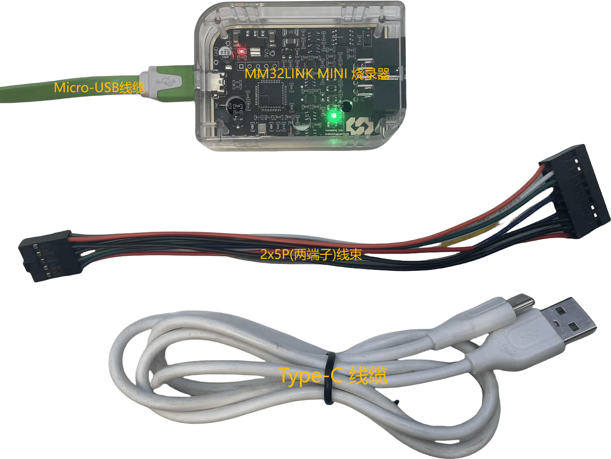
1.2 烧录流程
1.2.1 目录结构
灵动微_工厂测试
- 工具
- MM32LINK-Utility ## MM32LINK-Utility 软件
- XCOM V2.0.exe ## 串口助手软件
- MBxxx 烧录测试
- MBxxx_XXXX.hex ## hex 文件
- mindmotion.XXXX.pack ## pack 文件
- MBxxx 烧录测试
- MBxxx_XXXX.hex ## hex 文件
- mindmotion.XXXX.pack ## pack 文件
---
1.2.2 运行烧录工具
路径如下：灵动微_工厂测试\工具\MM32LINK-Utility\MM32-LinkUtility.exe。文件夹内有两个 exe 注意不要错点。
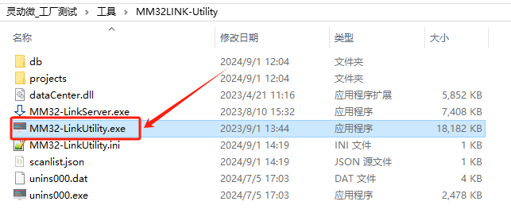
双击打开后，主界面：
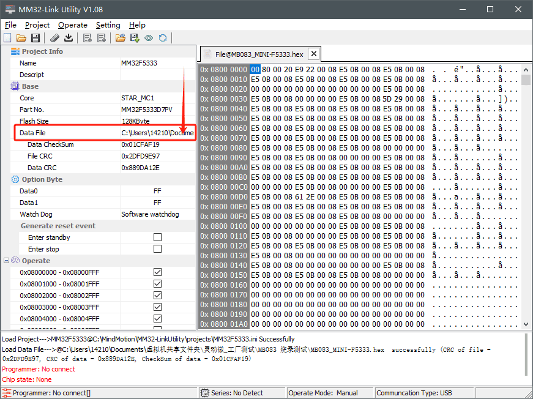
注意，图中的“Data File”烧录文件在第一次运行时，由于路径变动可能需要文件路径，双击上图中的红色区域，修改至本地测试文件夹MB083烧录测试\MB083_MINI-F5333.hex。示意如下：
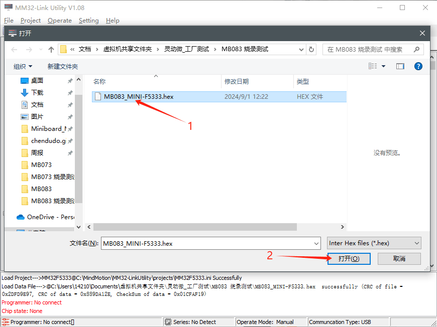
此时，使用提供的工装 MM32LINK-MINI 连接至待烧录的 MB083 开发板的 JTAG 牛角座，连接后示意图：
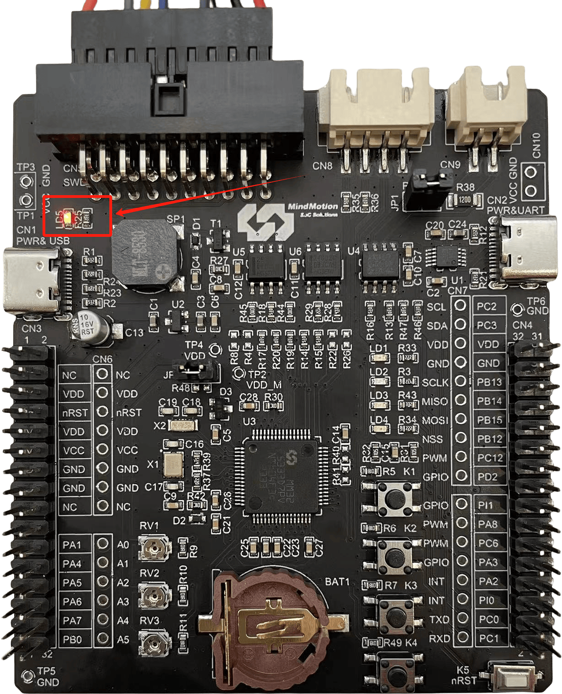
此时红色 LED 灯亮，待烧录板供电正常
MM32LINK Utility 软件下方状态栏 Series 出现绿色图标，并识别出MM32F5330即可。如图所示：
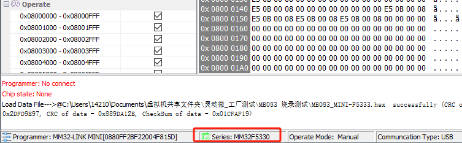
此时，键盘按下“F5”功能键即可一键烧录。等待烧录完成：
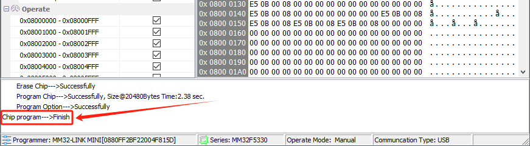
特别注意：批量烧录结束后，请关闭MM32LINK-Utility烧录软件。因为该软件会干扰后续测试工作。
2. 测试环节
2.1 准备工作
拔掉 MB083 与 MM32LINK 的连接。测试工装提供的 Type-C线缆 请插入MB083右侧CN2口，另一端连接电脑。
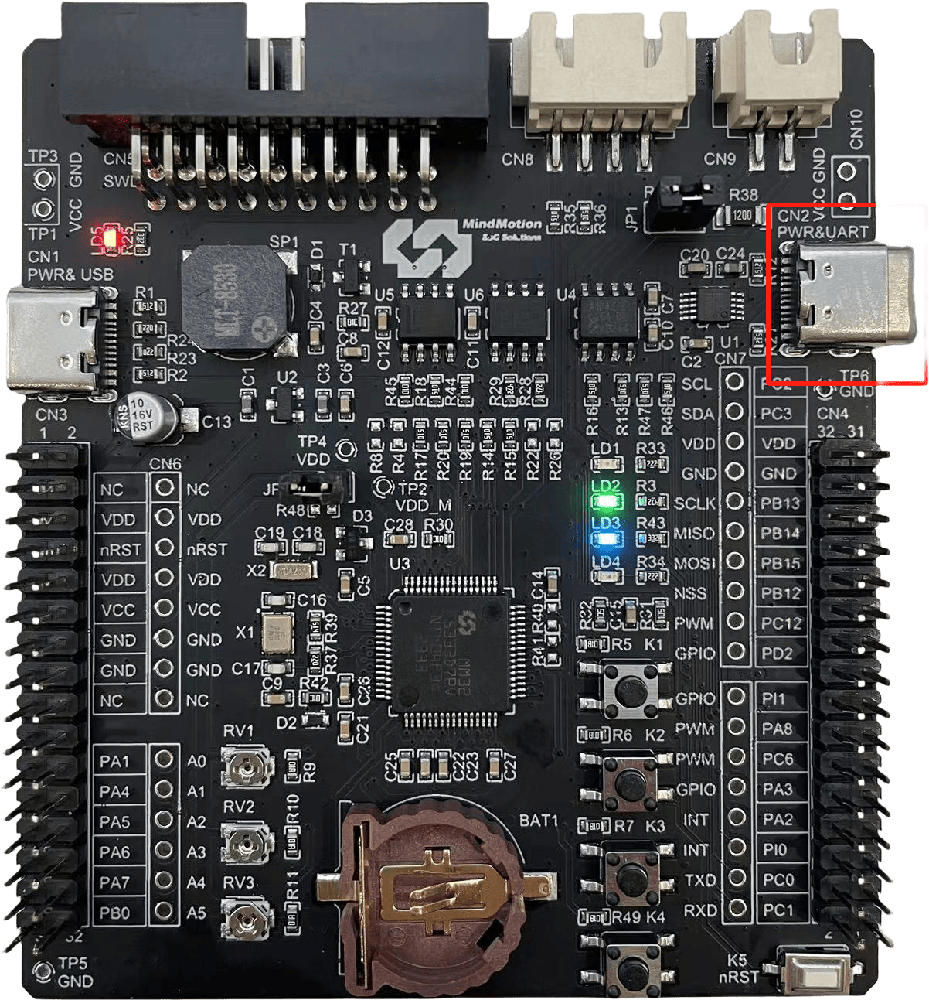
在工具文件夹 \灵动微_工厂测试\工具 下，双击打开串口助手软件：XCOM V2.0.exe，如图所示：
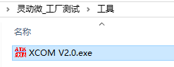
双击打开后，串口界面示意图的配置如下：
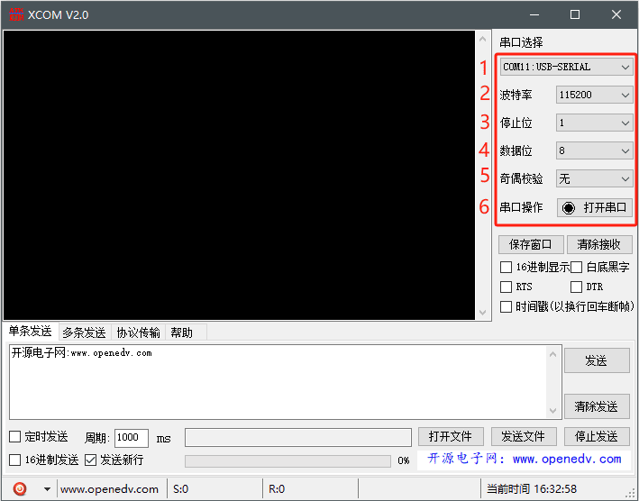
- COMx 选择：具体的
COM端口号，请在计算机-设备管理器-端口(COM和LPT)，可通过插拔USB设备，查看当前设备的端口号。如下图所示：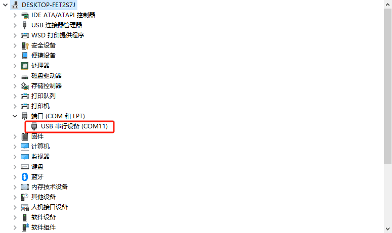
- 波特率：
115200 - 停止位：保持默认
1 - 数据位：保持默认
8 - 奇偶校验：
无 - 串口操作：点击
打开串口
注意：
1. 只要烧录器不重新插拔，保持当前的打开状态即可。如果后续测试串口软件没有反应，可以重新关闭打开串口。
2. 每次测试样板前，请点击"串口界面示意图"红框右下的清除接收，可以清屏。
2.2 测试步骤
- 复位：按下
K5复位按键，芯片复位并运行出厂固件。 - 蜂鸣器"滴-滴"两声，红、绿、蓝、橙灯连续闪烁两次，且以特定频率不断闪烁（检查1x蜂鸣器、4xLED）
- 红绿蓝橙四色。
- 在打开的串口软件界面，检查图示两项信息即可：
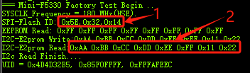
- SPI-FLASH Read ID信息：输出序列不出现全FF或全00即可；
- I2C-E2PROM 信息：输出0xAA序列即可 - 检查 4 路按键功能
- KEY1：打开/关闭LD2-LD4流水灯
- KEY2：串口输出，如下图所示。
- KEY3：串口输出，如下图所示。
- KEY4：串口输出，如下图所示。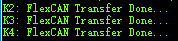
3. 常见问题
（暂无）
4. 测试报告
报告可包含测试时间、测试点状态、维修记录、测试结论。模板仅供参考
工单号： 批数量： 报告日期：
| 序号 | 测试时间 | 测试点1 | 测试点2 | 测试点3 | 测试点4 | 维修记录 | 结论 | 测试人 | 备注 |
|---|---|---|---|---|---|---|---|---|---|
| 1 | |||||||||
| 2 | |||||||||
| ... |
版本记录
- V1.0 @ 2024/09/01：首次发布